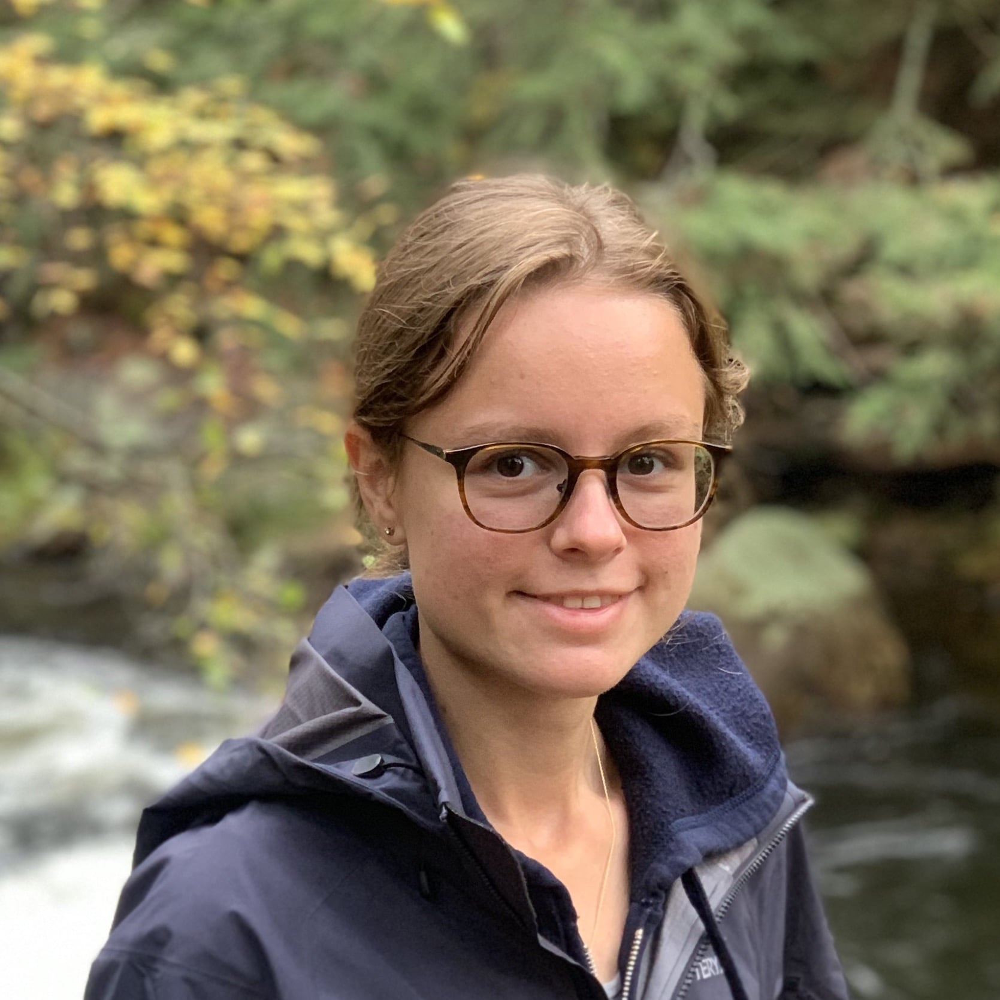
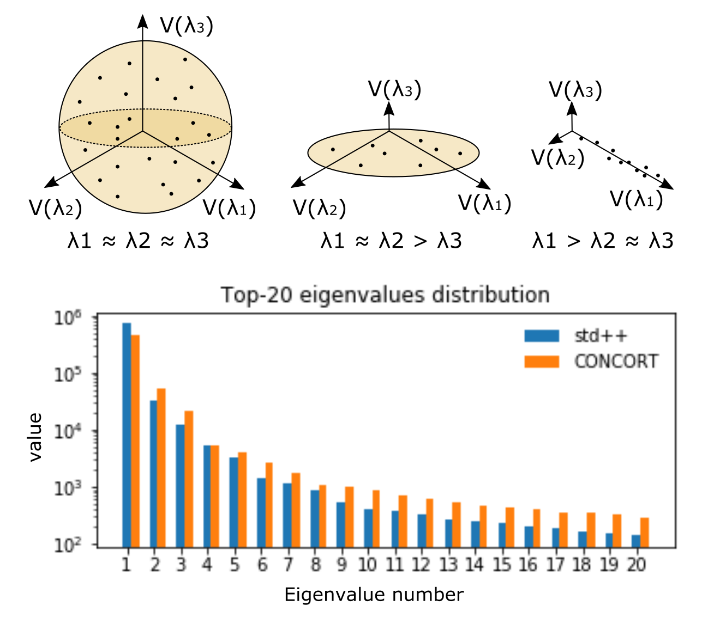
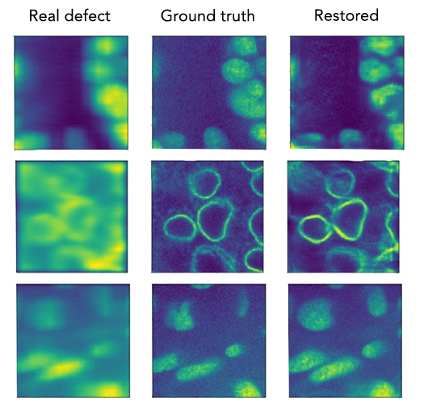

I am a PhD student at the University of Toronto and Vector Institute.
My research is at the intersection of representation learning, natural language processing, computer vision and application of these areas to biomedical problems.
Previously, I interned at
Amazon Research
and Recursion Pharmaceuticals.
More details in my CV.
Research
I am interested in developing algorithms that can learn meaningful representations from the real-world data, while being resistant to forgetting and inherent data noise.

Improving language models fine-tuning with representation consistency targets
Submitted to ACL 2022
PIFiA: a self-supervised approach for discovery of protein functional
fingerprints from single-cell imaging data
To be submitted to Nature Methods (Dec 2021)

Multi-defect microscopy image restoration under limited data conditions
NeurIPS 2019, Medical Imaging workshop (rated in top-15 submissions)
Talks
- Discovering gene-disease relationships with Deep Learning
- Panel discussion: AI in Healthcare and Future